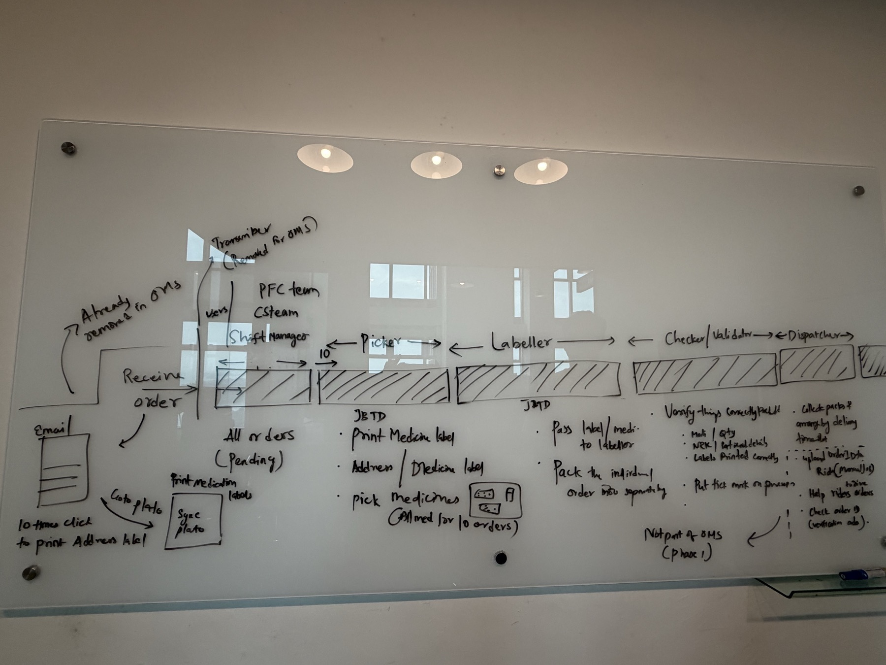

MedQuest · Doctor Anywhere Group
One medicine, two systems that have to agree.
OMS moves the order from payment to doorstep. IMS holds the one truth about what's in stock, where. Two builds, one service — designed end to end by one person.
01 · Where the two systems meet
Two networks, one handshake.
OMS owns the order. IMS owns the physical stock behind it. They're built, staffed and shipped separately — but a service only works if they agree at the one point they touch.
"IMS owns the physical. OMS owns the order. They meet exactly once — at the moment a Checker validates a packed order."
02 · Two entry points, two tracks
Pick a track — or read both.
Different pain, different pace: OMS was scoped tight and shipped first; IMS carries a wider blast radius and is now in engineering build.
03 · What both share
Sequencing was a design decision, not a scheduling one.
Both systems were needed — only one could go first. OMS's pain was immediate and its scope isolable to one team; IMS has to retire four legacy systems across 13 locations and two teams that had never shared a record before. The dependency was scoped deliberately: OMS's own spec marks the IMS deduction story "FYI US — NOT TO DO." OMS only fires the event and shows a batch-number field — that one cut is what let OMS ship without waiting on IMS.
